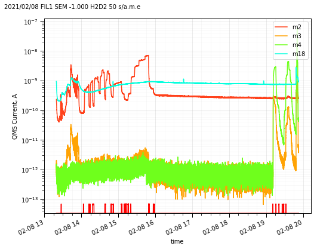

Qulee QMS#
Read and plot#
Use QMS to read a converted *.csv QMS file.
from aklab.qulee import QMS
qms = QMS('../data/S1_210208_131938.CSV')
qms.plot()

Data format#
Data is formatted as in this example. .iloc[:,:8] is used to reduce the output table size.
fmt = {i:'{:.1e}' for i in qms.data.keys()[4:]}
fmt['date'] = lambda t: t.strftime("%y%m%d %H:%M:%S")
qms.data.head(5).iloc[:,:8].style.format(fmt,precision=2)
| date | tsec | No | Time | Trigger | analog2 | qmsTP | m2 | |
|---|---|---|---|---|---|---|---|---|
| 0 | 210208 13:19:38 | 0.00 | 1 | 000:00:00.000 | 1.0e-08 | 1.0e-99 | 7.1e-03 | 2.3e-10 |
| 1 | 210208 13:19:38 | 0.30 | 2 | 000:00:00.296 | 1.0e-08 | 1.0e-99 | 7.0e-03 | 2.3e-10 |
| 2 | 210208 13:19:38 | 0.61 | 3 | 000:00:00.609 | 1.0e-08 | 1.0e-99 | 7.0e-03 | 2.3e-10 |
| 3 | 210208 13:19:38 | 0.92 | 4 | 000:00:00.921 | 1.0e-08 | 1.0e-99 | 6.9e-03 | 2.3e-10 |
| 4 | 210208 13:19:39 | 1.23 | 5 | 000:00:01.234 | 1.0e-08 | 1.0e-99 | 6.9e-03 | 2.3e-10 |
Use slice() to get a portion of the data.
from datetime import datetime as dt
sliced = qms.slice([dt(2021,2,8,13,19,40),dt(2021,2,8,13,19,41)])
sliced.iloc[:,:8].style.format(fmt,precision=2)
| date | tsec | No | Time | Trigger | analog2 | qmsTP | m2 | |
|---|---|---|---|---|---|---|---|---|
| 7 | 210208 13:19:40 | 2.17 | 8 | 000:00:02.171 | 1.0e-08 | 1.0e-99 | 6.8e-03 | 2.2e-10 |
| 8 | 210208 13:19:40 | 2.48 | 9 | 000:00:02.484 | 1.0e-08 | 1.0e-99 | 6.8e-03 | 2.2e-10 |
| 9 | 210208 13:19:40 | 2.80 | 10 | 000:00:02.796 | 1.0e-08 | 1.0e-99 | 6.7e-03 | 2.2e-10 |